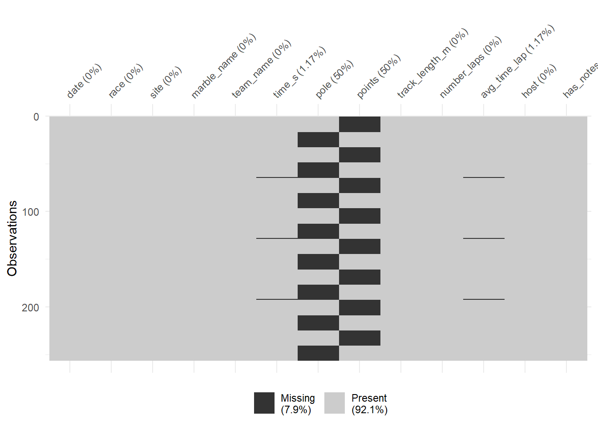
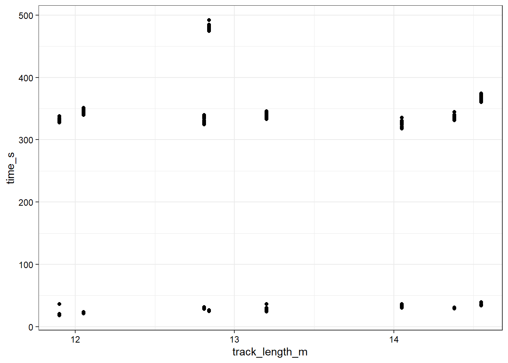
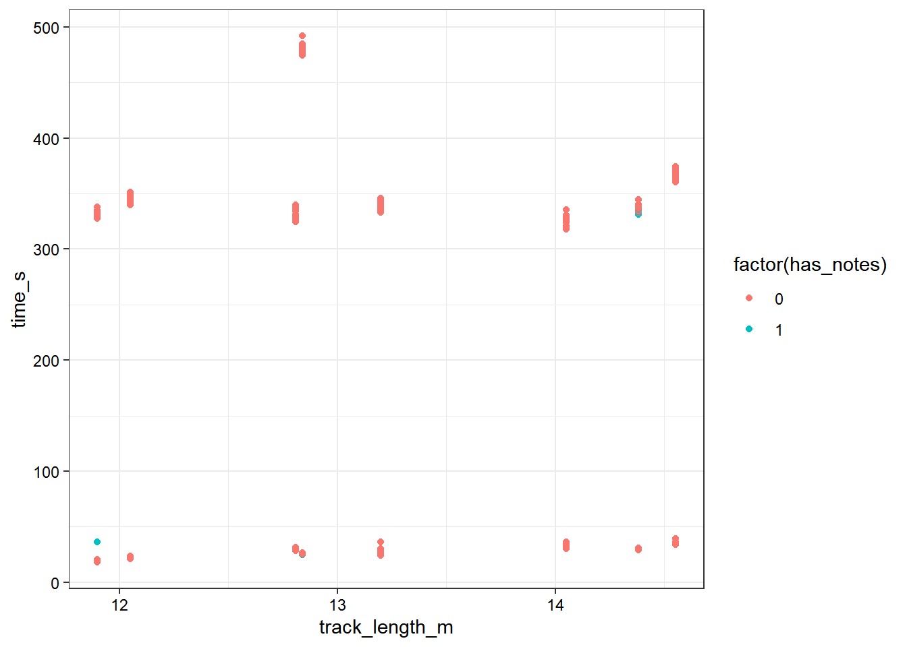
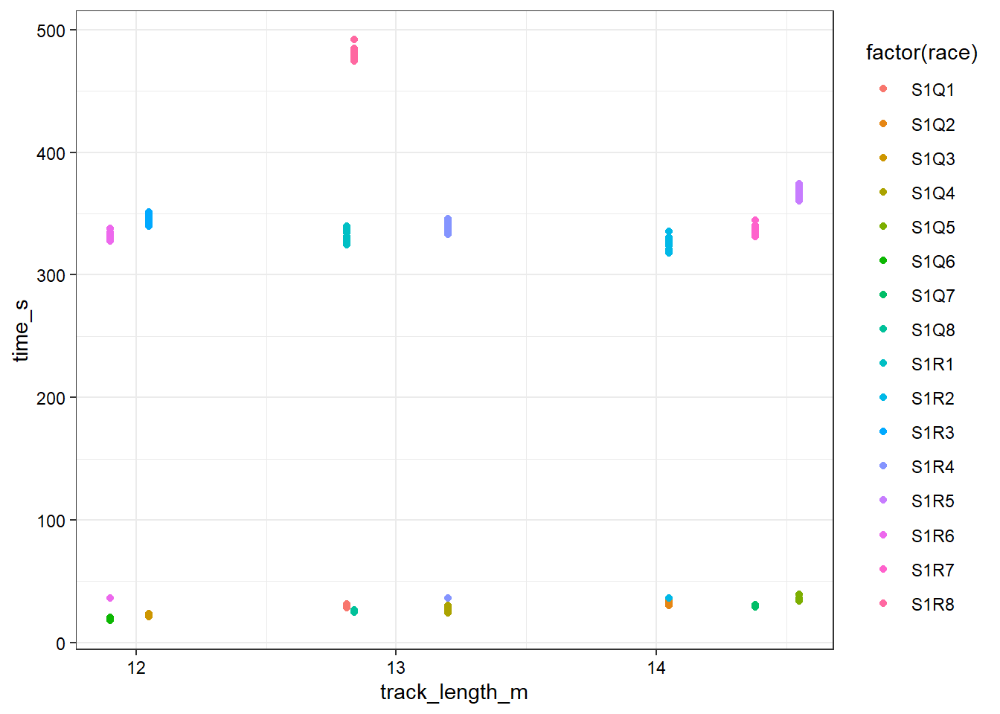
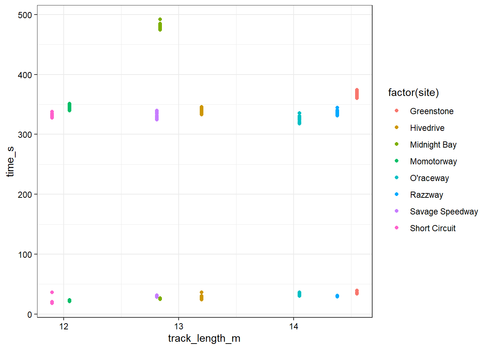
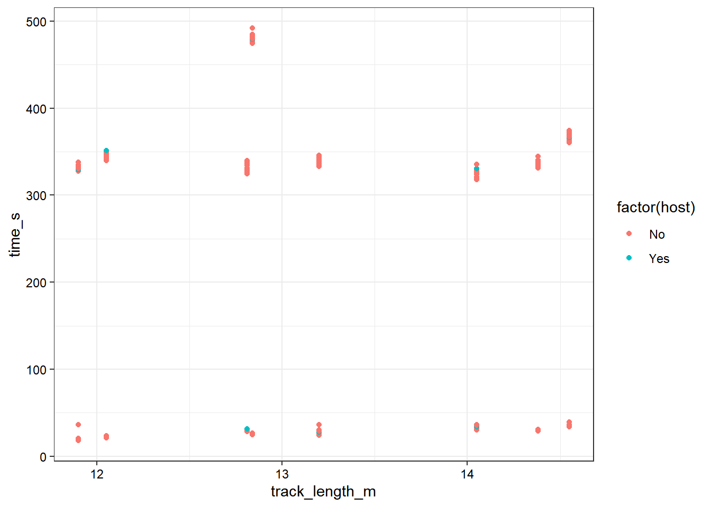
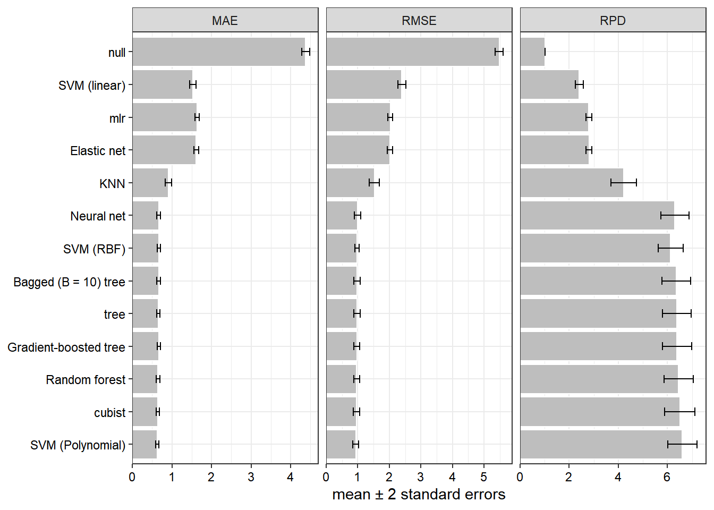

Tidy Tuesday 2
This week, I will be analyzing a set of marble run data which was a previous TidyTuesday dataset.
Setup
I will load all packages first, as always. I’ll also set the ggplot theme I want to use.
library(tidyverse) # For wrangling
library(tidymodels) # For modeling
library(tidytuesdayR) # To get the data
library(gt) # To make HTML tables
library(rules) # For cubist model
library(baguette) # For bagged tree model
library(doParallel) # For parallel processing
library(emoji) # Emoji in R markdown
# Packages for models
library(glmnet) # For elastic net
library(ranger) # For random forest
library(Cubist) # For cubist rule-based model
library(rpart) # For CART model
library(kernlab) # For SVM models
library(kknn) # For KNN regression model
library(xgboost) # For gradient boosting trees model
# Set the ggplot theme
theme_set(theme_bw() + theme(axis.text = element_text(color = "black")))
# Set a seed just in case :)
set.seed(370)Let’s go ahead and get the data loaded.
# Have to extract the dataset as the first object of a list. Whatever
marbles <- tidytuesdayR::tt_load(2020, week = 23)[[1]]##
## Downloading file 1 of 1: `marbles.csv`Let’s take a quick look at the data so we know what kinds of variables are in there.
glimpse(marbles)## Rows: 256
## Columns: 14
## $ date <chr> "15-Feb-20", "15-Feb-20", "15-Feb-20", "15-Feb-20", "15~
## $ race <chr> "S1Q1", "S1Q1", "S1Q1", "S1Q1", "S1Q1", "S1Q1", "S1Q1",~
## $ site <chr> "Savage Speedway", "Savage Speedway", "Savage Speedway"~
## $ source <chr> "https://youtu.be/JtsQ_UydjEI?t=356", "https://youtu.be~
## $ marble_name <chr> "Clementin", "Starry", "Momo", "Yellow", "Snowy", "Razz~
## $ team_name <chr> "O'rangers", "Team Galactic", "Team Momo", "Mellow Yell~
## $ time_s <dbl> 28.11, 28.37, 28.40, 28.70, 28.71, 28.72, 28.96, 29.11,~
## $ pole <chr> "P1", "P2", "P3", "P4", "P5", "P6", "P7", "P8", "P9", "~
## $ points <dbl> NA, NA, NA, NA, NA, NA, NA, NA, NA, NA, NA, NA, NA, NA,~
## $ track_length_m <dbl> 12.81, 12.81, 12.81, 12.81, 12.81, 12.81, 12.81, 12.81,~
## $ number_laps <dbl> 1, 1, 1, 1, 1, 1, 1, 1, 1, 1, 1, 1, 1, 1, 1, 1, 10, 10,~
## $ avg_time_lap <dbl> 28.11, 28.37, 28.40, 28.70, 28.71, 28.72, 28.96, 29.11,~
## $ host <chr> "No", "No", "No", "No", "No", "No", "No", "No", "No", "~
## $ notes <chr> NA, NA, NA, NA, NA, NA, NA, NA, NA, NA, NA, NA, NA, NA,~Ok, looks like there is some interesting stuff, but I can see clearly that there is some stuff that may not be informative. I’m going to not use the source variable at all, that one can be gone. I don’t know anything about marble racing and I am not planning to learn today, so I’m not entirely sure right now what all should go in the model though. My first thoughts is maybe the obvious one: we can use race as the ID variable and try to predict the winner of each race. Whether or not we can do this depends on how many unique marbles there are, so let’s go ahead and look at that.
model_data <- marbles
model_data$source <- NULLExploration
marbles %>%
ggplot(aes(y = forcats::fct_rev(marble_name))) +
geom_bar(color = "black", fill = "gray") +
labs(y = NULL) +
scale_x_continuous(expand = expansion(mult = c(0, 0.05)))
OK, great, it looks like all models were there 8 times. So now I am curious what the race names mean and what the team names mean. Let’s try to look at the “experimental design” of this data. Of course this isn’t an experiment but it’s really helpful to know the structure of how marble names, team names, and race IDs overlap.
marbles %>%
group_by(team_name, marble_name) %>%
count() %>%
ungroup() %>%
arrange(team_name) %>%
head() %>%
gt::gt()| team_name | marble_name | n |
|---|---|---|
| Balls of Chaos | Anarchy | 8 |
| Balls of Chaos | Clutter | 8 |
| Green Ducks | Billy | 8 |
| Green Ducks | Mallard | 8 |
| Hazers | Hazy | 8 |
| Hazers | Smoggy | 8 |
OK, it looks like each team has two marbles.
marbles %>%
count(race, team_name) %>%
count(race) %>%
head() %>%
gt::gt()| race | n |
|---|---|
| S1Q1 | 16 |
| S1Q2 | 16 |
| S1Q3 | 16 |
| S1Q4 | 16 |
| S1Q5 | 16 |
| S1Q6 | 16 |
OK, (again this is just the top of the table otherwise it would be really long and not interesting), each team participated in each race that is recorded.
table(marbles$race, marbles$marble_name) %>%
as.data.frame() %>%
ggplot(aes(x = Var1, y = fct_rev(Var2), fill = factor(Freq))) +
geom_tile(color = "black") +
scale_fill_manual(values = c("white", "deepskyblue"), guide = "none") +
labs(x = "race", y = "marble")
This plot has the tile colored blue if the marble was in the given race, and white if it was not. So we can see that each marble was in about half of the races each season. Man I sure wish any of the documentation provided explained this kind of basic information so I didn’t have to figure this out myself. Of course we know from earlier than each marble participated in 8 races, so it looks like each team had two marbles, and each of those marbles was in 8 out of 16 races.
Now let’s take a quick look at the weird “notes” column in the data to see what’s in there.
unique(marbles$notes) %>% as_tibble() %>% gt::gt()| value |
|---|
| NA |
| Note: Came to complete stop in Lap 14 |
| *Note: A yellow SAFETY flag is issued due to incident in Lap 1. |
| Shortly after, a red SUSPENDED flag is issued to restart the race, due to major blockage. |
| **Note: Upon the restart, another red flag is issued due to a track invasion incident by a rowdy fan |
| Race resumed normally after the culprit is escorted by security marbles |
| *Note: Slight incident between Speedy and Clementin |
| Ultimately, JMRC reviews and deems no action is necessary |
Ok, great. I don’t know what to do with any of that information. Let’s transform this into a binary variable that is 0 if there is a note, and 1 if there is not a note.
model_data$has_notes <- if_else(is.na(marbles$notes), 0, 1)
model_data$notes <- NULLI’ll be hoenst, I’m not sure what pole or points really means and the provided data documentation doesn’t explain it at all, but that’s ok. It seems like the main thing to predict for this model is likely the total time it takes a marble to finish the race. I will be honest, just at first glance I think that none of this information seems interesting to predict speed with. There is no physical information about the model or the track, which I assume determines at least 90% of the speed, and unavailable cosmic fluctuations which are unknowable and unmeasurable determine the “random” component. Of course a perfect physical model could exactly determine which marble would win the race, but I assume that a marble run is a chaotic dynamic system.
Yes, of course a consequence of that is that modeling it without knowing the initial conditions is likely fruitless. But that has never stopped me before, and maybe I will discover a new law of physics where the name of a marble is entangled with its physical properties. That would be crazy, huh?
Anyways let’s make some plots. The first thing I’ll do is visualize where missing data are.
naniar::vis_miss(model_data)
Oh great. It looks like there are a few actual missing values in time_s and avg_time_lap. Well, there’s not a lot so I’ll impute them with the median and no one can stop me. If we’re lucky, an iteraction with the has_notes variable will account for my lazy imputation. Let’s check that out before I complain about whatever is going on with the pole and points variables.
model_data %>%
filter(is.na(time_s)) %>%
ggplot(aes(x = has_notes)) +
geom_bar()
Oh. There are only three that are missing. Now I definitely feel justified in doing whatever I want so I WILL impute with the median and no one can stop me.
model_data <- model_data %>%
mutate(across(c(time_s, avg_time_lap), ~if_else(is.na(.x),
median(.x, na.rm = TRUE),
.x)))Now the issue that remains is the pattern of missingness between points and pole. Since I do not really understand either of these variables, my solution shall be as follows.
model_data$points <- NULL
model_data$pole <- NULLI wash my hands of them and I hope that they are not predictive.
Next, I’ll make sure every variable left has the type I think it should have.
model_data <- model_data %>%
mutate(
date = lubridate::dmy(date),
across(where(is.character), as.factor)
)Let’s take another quick look at the data to make sure it’s all going as planned.
glimpse(model_data)## Rows: 256
## Columns: 11
## $ date <date> 2020-02-15, 2020-02-15, 2020-02-15, 2020-02-15, 2020-0~
## $ race <fct> S1Q1, S1Q1, S1Q1, S1Q1, S1Q1, S1Q1, S1Q1, S1Q1, S1Q1, S~
## $ site <fct> Savage Speedway, Savage Speedway, Savage Speedway, Sava~
## $ marble_name <fct> Clementin, Starry, Momo, Yellow, Snowy, Razzy, Prim, Ve~
## $ team_name <fct> O'rangers, Team Galactic, Team Momo, Mellow Yellow, Sno~
## $ time_s <dbl> 28.11, 28.37, 28.40, 28.70, 28.71, 28.72, 28.96, 29.11,~
## $ track_length_m <dbl> 12.81, 12.81, 12.81, 12.81, 12.81, 12.81, 12.81, 12.81,~
## $ number_laps <dbl> 1, 1, 1, 1, 1, 1, 1, 1, 1, 1, 1, 1, 1, 1, 1, 1, 10, 10,~
## $ avg_time_lap <dbl> 28.11, 28.37, 28.40, 28.70, 28.71, 28.72, 28.96, 29.11,~
## $ host <fct> No, No, No, No, No, No, No, No, No, No, No, No, No, No,~
## $ has_notes <dbl> 0, 0, 0, 0, 0, 0, 0, 0, 0, 0, 0, 0, 0, 0, 0, 0, 0, 0, 0~Yep, that looks ok I think.
First I’ll plot the things that seem obvious to me: the number of laps and the track length should both be strongly predictive of the time it takes a marble to finish.
model_data %>%
ggplot(aes(x = track_length_m, y = time_s)) +
geom_point()
Well. That’s…not what I was expecting. That’s actually quite annoying. Let’s try coloring by some different things to see if we can figure out why this looks absolutely insane.
model_data %>%
ggplot(aes(x = track_length_m, y = time_s, col = factor(has_notes))) +
geom_point()
Nope, having notes doesn’t explain it.
model_data %>%
ggplot(aes(x = track_length_m, y = time_s, col = factor(race))) +
geom_point()
Nope, the race doesn’t explain it.
model_data %>%
ggplot(aes(x = track_length_m, y = time_s, col = factor(site))) +
geom_point()
Nope, the site doesn’t explain it.
model_data %>%
ggplot(aes(x = track_length_m, y = time_s, col = factor(host))) +
geom_point()
Nope, being the host doesn’t explain it.
model_data %>%
ggplot(aes(x = track_length_m, y = time_s, col = factor(number_laps))) +
geom_point()
Oh. The number of laps explains it because the time isn’t normalize by lap…well, I’ll leave all these plots in here because this is the order that I made them in real life, but huh I guess I really should have thought about that. Such is the danger of replacing critical thought with brute force algorithms. Earlier I deleted the average time per lap variable but now I changed my mind and I think that’s probably much better to predict, so I edited my code and undeleted it. That will be my outcome variable now.
model_data %>%
ggplot(aes(x = track_length_m, y = avg_time_lap)) +
geom_point() +
geom_smooth()
Yeah, that looks kind of like a trend alright. Nice! We finally found one. But I think it is obvious that the site and the track length are collinear. I’ll make a colored plot just to show that off, since this is on the internet so I can include as many plots as I want.
model_data %>%
ggplot(aes(x = track_length_m, y = avg_time_lap, color = site)) +
geom_point() +
geom_smooth()
Yep, that kind of pattern is exactly what we would expect from a numerical variable that’s actually a categorical variable in disguise. So in the final model, I’ll only include the track length in meters, not the site. (Getting estimates is way easier if you disguise a variable as a number, and we will use some nonlinear models so it won’t have the same disadvantages that all my stats professors warned me about 😁.)
Let’s look at the distribution of the marbles.
model_data %>%
ggplot(aes(x = avg_time_lap, y = fct_rev(marble_name))) +
geom_boxplot(outlier.shape = NA, alpha = 0.5) +
geom_point(shape = 21, color = "red") +
labs(y = NULL) +
geom_vline(xintercept = median(model_data$avg_time_lap),
color = "blue", lty = 2, alpha = 0.5)
Well, that looks like a plot. I think the intraclass correlation is probably low because there is a lot of spread within each marble, so the overall source of variation likely tends to be more from within-marble variation rather than between-marble variation. That supports my idea that this is a chaotic dynamical system and small changes in initial conditions can change the time of a marble drastically regardless of any differences between the marbles. I am not going to actually calculate the ICCs though.
Let’s check the same thing team-wise as well.
model_data %>%
ggplot(aes(x = avg_time_lap, y = fct_rev(team_name))) +
geom_boxplot(outlier.shape = NA, alpha = 0.5) +
geom_point(shape = 21, show.legend = FALSE, aes(fill = marble_name)) +
labs(y = NULL) +
geom_vline(xintercept = median(model_data$avg_time_lap),
color = "blue", lty = 2, alpha = 0.5) +
scale_fill_viridis_d(option = "turbo")
Same conclusion, there appears to be more within-team variation than between-team variation. That’s all I really have to say about that. Each color here is a different marble, so we can see the spread of each marble within each team.
Next let’s see if there is any noticeable effect of date.
model_data %>%
ggplot(aes(x = date, y = avg_time_lap)) +
geom_point() +
geom_smooth()
Ok, that looks fine. It is probably not predictive at all, although it appears that the second out of each group of two is always higher. That’s weird but I bet it’s probably explained by an interaction or something. Oh well, I’ll throw the date into the model anyways.
Let’s look and see if averaging the effect of lap numbers accounts for the entire effect of the number of laps.
model_data %>%
ggplot(aes(x = number_laps, y = avg_time_lap)) +
geom_point()
Ok, that’s weird. It looks like we need to create an indicator variable for whether the number of laps is 1 or greater than 1. We could also use splines/GAMs but this is just a lot easier especially if we use nonlinear models. This indicator would probably be important in the construction of a good linear model–that isn’t really my goal here, but I figured I’d create it anyways and throw it into the machine learning feature selection chaos.
model_data$one_lap <- if_else(model_data$number_laps == 1, 1, 0)Now let’s make a line or whatever.
model_data %>%
ggplot(aes(x = number_laps, y = avg_time_lap, color = factor(one_lap))) +
geom_point() +
geom_smooth(method = "lm") +
scale_color_manual(values = c("orange", "purple"))
It looks like there is kind of a linear or polynomial trend leftover for the higher number of laps. I will attribute this to friction or inertia or whatever, I do not really remember the physics one class I took in undergrad. I think a lot of quadratic effects show up in physics, and that looks like it could be quadratic. Let’s make a plot like that just to see.
model_data %>%
ggplot(aes(x = number_laps, y = avg_time_lap, color = factor(one_lap))) +
geom_point() +
geom_smooth(method = "lm", formula = "y ~ poly(x, degree = 2)") +
scale_color_manual(values = c("orange", "purple"))
Yeah, that seems to explain it really well. Just because I’m curious about this now, I want to create a cubic plot. This isn’t really super interesting but if I remember correctly, cubic effects on speed can sometimes show up in more complicated scenarios? Oh well, Dr. Handel knows physics and will tell me if that doesn’t make any sense. Since we have an integer-valued indepdent variable with multiple measurements at each value, I’m not too worried about Runge’s phenomenon or polynomial overfitting, which can be a big issue. The cubic effect is the last one that I’ll look at.
model_data %>%
ggplot(aes(x = number_laps, y = avg_time_lap, color = factor(one_lap))) +
geom_point() +
geom_smooth(method = "lm", formula = "y ~ poly(x, degree = 3)") +
scale_color_manual(values = c("orange", "purple"))
Ok, this is probably a numerically better fit because more parameters will always tend to explain more variance in the response, but I don’t think there’s any evidence that a cubic effect makes more sense than a quadratic effect. I think if I were constructing an inferential linear model, I’d include the number of laps as a quadratic effect. I also expect that the variation in the average time in one lap is completely explained by the additional effect of track distance, which probably helps to explain a lot of the trend in the effect of a higher number of laps also.
Now let’s look at the effect of hosting.
model_data %>%
group_by(host) %>%
summarize(mean_se(avg_time_lap)) %>%
ggplot(aes(x = host, y = y, ymin = ymin, ymax = ymax)) +
geom_col(color = "black", fill = "gray") +
geom_errorbar(width = 0.1) +
scale_y_continuous(expand = expansion(mult = c(0, 0.05))) +
labs(y = "mean avg run time (one SE)")
Ok, there is very little if any effect of being the host. Let’s look at the notes indicator variable last.
model_data %>%
group_by(has_notes) %>%
summarize(mean_se(avg_time_lap)) %>%
ggplot(aes(x = has_notes, y = y, ymin = ymin, ymax = ymax)) +
geom_col(color = "black", fill = "gray") +
geom_errorbar(width = 0.1) +
scale_y_continuous(expand = expansion(mult = c(0, 0.05))) +
labs(y = "mean avg run time (one SE)")
OK, there is not a lot of effect of having notes either. That’s fine. OK, I think that’s all the exploring we can do. I thought about doing something silly like turning the marble names and team names into text predictors but I don’t actually think I’m going to do that.
Modeling
Let’s fit some models with what we have and see what happens. Here are the models I am thinking about:
- Null model \(\hat{y}_i = \bar{y}\): fit this one;
- Multiple linear regression: fit this one;
- Elastic net: fit this one;
- MARS: seemed really bad so I didn’t end up using this one;
- LARS: I actually can’t figure out how to do this in tidymodels, so oh well.;
- Rulefit: couldn’t get this one to tune correctly?;
- Cubist: fit this one;
- Simple tree: fit this one;
- Bagged tree: fit this one;
- Random forest: fit this one;
- Gradient boosted tree: fit this one;
- SVM–not sure about the kernel though so I may as well try more than one: fit all three available kernels;
- NN: fit this one but not sure if I did it right or if it was supposed to be good. We definitely don’t have enough data for this to be very efficient, though.
Not sure if I want to do anything else, that seems pretty good.
Modeling setup
We want to evaluate the cross-validated performance of our models, so let’s go ahead and “spend our data budget”. My go-to cross-validation strategy is 10x5, which should be feasible in a decent amount of time if I run models in parallel, since there isn’t a lot of data.
set.seed(470)
split <- initial_split(model_data, prop = 3/4, strata = avg_time_lap)
train <- training(split)
test <- testing(split)
cv_data <- vfold_cv(model_data, v = 10, repeats = 5, strata = avg_time_lap)We’ll also define a metric set. I almost always tend to prefer MAE so I’ll calculate that for each model. I’ll also get the RMSE, which is a pretty standard measure of regression performance, and is useful to compare to the MAE when selecting many models. Finally, I’ll calculate the ratio of performance to deviation (RPD), which apparently a lot of people dislike, but I’ve never heard a convincing argument from a statistician why it shouldn’t be used for model comparison. I’ll be optimizing the MAE to control the effect of potential outliers. (The Huber/pseudohuber loss would probably be better, but requires guessing the \(\delta\) parameter or estimating it from the data, which I don’t love doing.)
model_metrics <- yardstick::metric_set(mae, rmse, rpd)Now let’s define the preprocessors that we’ll use. I’m going to do a bit of preprocessing to create numeric features from the date, create dummy variables from factors, and remove all variables with zero variance–several of the date features will have zero variance, so this is important. I decided not to use a near-zero variance filter, since I expect the hosting and note indicator variables might get removed. I do not think these are predictive on their own, but I want to leave them in the model just in case they interact with other predictors.
Since we have a mixture of numerical and categorical variables, I’ll normalize all variables with a \(Z\)-score transformation. This can help numerical variables from seeming more important than categorical predictors in certain models, such as elastic net or KNN. I’ll also construct orthogonal polynomial transformations for number of laps and average track length. I won’t remove correlated features because the models I am going to use can deal with those just fine. They can mess up the LASSO estimates a bit, but it won’t break the model.
I think that the side, race, marble name, and team name features all certainly provide a lot of predictive power, but in the interest of creating a model that is even slightly externally valid, I’ve left these predictors out of the model. Including any of these would prevent the model ever being useful in the future, e.g. if a new team, new marble, or new track was introduced. And of course adding the race into the model doesn’t really make any sense at all.
Unfortunately, you see what I have to work with here.
The data have no features on the actual characteristics of the marbles or tracks, so this is the best we will get.
std_rec <-
recipe(
avg_time_lap ~ number_laps + host + has_notes + one_lap + date +
track_length_m,
data = train
) %>%
# Normalize the two numeric-valued predictors
step_normalize(number_laps, track_length_m) %>%
# Construct second degree orthogonal polynomial terms
step_poly(number_laps, track_length_m, degree = 2) %>%
# Create features from date; discard original date predictor
step_date(date, keep_original_cols = FALSE) %>%
# Create dummy variables where necessary
step_dummy(all_nominal_predictors()) %>%
# Remove all features with exactly zero variance.
step_zv(all_predictors())
# For finalizing parameters
pred_data <- std_rec %>% prep() %>% juice(all_predictors())
# Empty tibble for holding results
mets_comb <- tibble()
# Initalize parallel processor
cl <- makePSOCKcluster(30)
doParallel::registerDoParallel(cl)Now let’s do some models. This WOULD be a lot faster with a workflowset, but every time I try that it’s just absolutely busted and I run into new errors that I literally cannot solve while using the workflowset. So I’ll just repeat a lot of code and have 1000 lines of code for this project. I hope that workflowsets becomes easier to use in the future. (Author’s note: I actually tried using a workflowset, but got errors that just don’t happen when I ran the exact same code outside of workflow_map(). So what else am I supposed to conclude?)
Null model
The first model I’ll fit is the null model, which predicts the mean of the response for all predictions. Note that I am setting the seed before each model. My heart tells me that I don’t have to do this, but my anxiety tells me that I should because this page takes so long to knit.
set.seed(470)
# Define the null model specification
null_spec <-
null_model() %>%
set_mode("regression") %>%
set_engine("parsnip")
# Create a workflow
null_wf <- workflow() %>%
add_model(null_spec) %>%
add_recipe(std_rec)
# Get CV performance
null_cv_res <- fit_resamples(
null_wf,
resamples = cv_data,
metrics = model_metrics,
control = control_resamples(verbose = TRUE)
)
# Extract metrics
null_mets <- null_cv_res %>% collect_metrics()
mets_comb <- bind_rows(mets_comb, null_mets %>% mutate(model = "null"))Let’s write a quick function to display the results nicely.
display_metrics <- function(mets, caption = NULL) {
mets %>%
transmute(
metric = .metric,
# This does rounding and formatting in one step
estimate = sprintf("%.4f", mean),
SE = sprintf("%.4f", std_err)
) %>%
gt::gt(caption = caption)
}
display_metrics(null_mets, "Null model performance")| metric | estimate | SE |
|---|---|---|
| mae | 4.3786 | 0.0511 |
| rmse | 5.4790 | 0.0668 |
| rpd | 1.0178 | 0.0004 |
There’s not much to say about the null model–I think the RPD (ratio of performance to deviation) lets us know that the null model is truely uninformative in this case. That means that for this model, if we guess completely randomly, this will be the error we expect to see. The MAE is lower than the RMSE, but we can’t make any judgments about the influence of outliers with just the information from the null model–if the RMSE and MAE suggest the selection of different models, this can suggest that outliers are influential, but we need to fit more models to determine that.
Multiple linear regression
Next I’ll fit a simple multiple linear regression model.
set.seed(470)
# Create the MLR model spec
mlr_spec <-
linear_reg() %>%
set_mode("regression") %>%
set_engine("lm")
# Create a workflow
mlr_wf <- workflow() %>%
add_model(mlr_spec) %>%
add_recipe(std_rec)
# Get CV performance
mlr_cv_res <- fit_resamples(
mlr_wf,
resamples = cv_data,
metrics = model_metrics,
control = control_resamples(verbose = TRUE)
)
# Save and display metrics
mlr_mets <- mlr_cv_res %>% collect_metrics()
display_metrics(mlr_mets, "MLR model performance")| metric | estimate | SE |
|---|---|---|
| mae | 1.6327 | 0.0277 |
| rmse | 2.0289 | 0.0415 |
| rpd | 2.8008 | 0.0616 |
mets_comb <- bind_rows(mets_comb, mlr_mets %>% mutate(model = "mlr"))OK, that’s good. It looks like this simple model performs MUCH better than the null model, which means that our predictor set is definitely somewhat predictive of the outcome. The RPD is much higher as well, which we would expect for a model that explains more.
Tuning routine
The rest of the models I want to fit have to tune hyperparameters. I want to fit a lot of models for no reason, so let’s go ahead and standardize the tuning routine. My tuning routine for these models will consist of a two-stage system. First, I’ll use latin hypercube sampling to construct a relatively small grid of initial hyperparameter combinations that covers the parameter space the most efficiently, given the size of the grid I’m willing to permit. The number of initial candidate predictors to be sampled from the parameter space is controlled by the GRID_SIZE global constant defined below.
After the initial grid search over these initial candidate parameters, I’ll use a Bayesian-based tuning strategy called Gaussian process modeling to iteratively update the hyperparameters. The best hyperparameter candidate set from the grid search will be used to initialize the process, which will then “guess” another set of candidate parameters using the Gaussian process model. This process is repeated until either the maximum number of iterations is reached (controlled by the BAYES_ITER global constant defined below), or until no improvement has been found after 10 iterations.
# These are my hyper-hyper parameters. (Hyper^2parameters?) They control how
# fine-grained the model tuning will be.
GRID_SIZE <- 10
BAYES_ITER <- 25
tune_model <- function(wf, ...) {
# Get parameter information and finalize. This is necessary for proper
# performance with hyperparameters that have data-dependent ranges, like mtry.
parms <- parameters(wf) %>%
finalize(pred_data)
# Create latin hypercube grid for initial search
tuning_grid <- grid_latin_hypercube(parms, size = GRID_SIZE)
# Initial grid search
grid_res <- wf %>%
tune_grid(
resamples = cv_data,
grid = tuning_grid,
param_info = parms,
metrics = model_metrics,
control = control_grid(
verbose = TRUE
)
)
# Bayesian optimization based on grid search results
tune_res <- wf %>%
tune_bayes(
resamples = cv_data,
iter = BAYES_ITER,
initial = grid_res,
param_info = parms,
metrics = model_metrics,
control = control_bayes(
verbose = TRUE
)
)
return(tune_res)
}Now that the tuning method is ready, we can start to fit the models with hyperparameters.
Elastic net
Next I’ll fit a linear model with elastic net regularization–I’m tuning both the mixture and the penalty parameters in this case.
set.seed(470)
# Define model spec
en_spec <-
linear_reg(
penalty = tune(),
mixture = tune()
) %>%
set_mode("regression") %>%
set_engine("glmnet")
# Create workflow
en_wf <- workflow() %>%
add_model(en_spec) %>%
add_recipe(std_rec)
# Tune model
en_tune_res <- tune_model(en_wf)
# Finalize workflow. Select a good workflow that choose the highest penalty
# parameter--this results in a simpler model for similar performance.
best_en_mod <- select_by_one_std_err(
en_tune_res, metric = "mae", -penalty
)
# Finalize workflow with optimal hyperparameters
best_en_wf <- en_wf %>%
finalize_workflow(best_en_mod)
# Get cross-validated metrics for best workflow
en_res <- fit_resamples(
best_en_wf,
resamples = cv_data,
metrics = model_metrics,
control = control_resamples(verbose = TRUE)
)
# Extract and display results
en_mets <- en_res %>% collect_metrics()
en_mets %>% display_metrics("Elastic net model performance")| metric | estimate | SE |
|---|---|---|
| mae | 1.6150 | 0.0287 |
| rmse | 2.0238 | 0.0410 |
| rpd | 2.8061 | 0.0607 |
mets_comb <- bind_rows(mets_comb, en_mets %>% mutate(model = "Elastic net"))OK, the elastic net model doesn’t appear to do much better than the MLR model (I wanted to say “significantly better” but I don’t need anyone who loves \(p\)-values to come after me). This tends to indicate that the predictor set as a whole provides information about the outcome, and each predictor contains independent information, and so regularization is inappropriate for improving performance. This could also mean that we might want to explore higher-order model terms, but I think for this purpose it will be better to explore models that can automatically find nonlinear interaction between predictors that it will to get into the weeds of linear models.
Note that I am not going to worry about what the best-performing hyperparameter values are. For models with simple, interpretable hyperparameters like elastic net and KNN, looking at the optimal hyperparameter values can sometimes be interesting or informative, but I’m planning to look at some more complex models where the hyperparameters do not necessarily mean anything to me. So I won’t even look at those, I’ll just look at the model performances.
KNN
Next I’ll fit a \(k\)-nearest neighbors regression model. Note that for KNN, the tuning strategy I worked out before is actually really unnecessary. The model only has one integer-valued parameter, so instead of using my complex tuning setup, I’ll literally just do a simple grid search. I decided to use the Epanechnikov kernel for weighting the KNN regressor, because that’s just my go-to kernel for kernel density estimation. I couldn’t find ANY could references on what makes the “optimal” kernel optimal, or when different kernels should be used, so if any statisticians read this and know, please tell me where I can read about this–I was even having trouble finding it in the kknn documentation so this is really just a guess.
set.seed(470)
# Create model spec
knn_spec <-
nearest_neighbor(
neighbors = tune(),
weight_func = "epanechnikov"
)
# Create workflow
knn_wf <- workflow() %>%
add_model(knn_spec) %>%
add_recipe(std_rec)
# Tune model
knn_tune_res <- knn_wf %>%
tune_grid(
resamples = cv_data,
grid = tibble(neighbors = 1:GRID_SIZE),
metrics = model_metrics,
control = control_grid(
verbose = TRUE
)
)
# Finalize workflow. Select a good workflow that choose the lowest number of
# neighbors within one SE of the best MAE.
best_knn_mod <- select_by_one_std_err(
knn_tune_res, metric = "mae", neighbors
)
best_knn_wf <- knn_wf %>%
finalize_workflow(best_knn_mod)
knn_res <- fit_resamples(
best_knn_wf,
resamples = cv_data,
metrics = model_metrics,
control = control_resamples(verbose = TRUE)
)
knn_mets <- knn_res %>% collect_metrics()
knn_mets %>% display_metrics("KNN model performance")| metric | estimate | SE |
|---|---|---|
| mae | 0.9115 | 0.0382 |
| rmse | 1.5246 | 0.0779 |
| rpd | 4.2254 | 0.2593 |
mets_comb <- bind_rows(mets_comb, knn_mets %>% mutate(model = "KNN"))Well, the KNN model certainly seems to perform better than the linear models we tried. This can indicate a more complicated local structure than the global linear models are able to pick up on (note that this can also suggest higher-order regression terms are appropriate, but not always). Sometimes this can also indicate that the KNN regressor is overfitting, but with the 10x5 cross-validation strategy, I tend to err on the side of assuming overfitting is less of a problem. That isn’t always the case, but I don’t think it’s a stretch to say that local structure may be present in these data.
Cubist rule-based method
Next up is a model I was really interested in. This is a rule-based model using the cubist algorithm, which sort of combines trees and linear models to produce a simple model which can automatically detect interactions. This should perform better than the MLR model, but I’m interested to see how well it performs compared to the various other tree-based methods I want to try.
set.seed(470)
cubist_spec <-
cubist_rules(
committees = tune(),
neighbors = tune(),
max_rules = tune()
) %>%
set_mode("regression") %>%
set_engine("Cubist")
# Create workflow
cubist_wf <- workflow() %>%
add_model(cubist_spec) %>%
add_recipe(std_rec)
# Tune model
cubist_tune_res <- tune_model(cubist_wf)
# Finalize workflow. Select a good workflow that choose the lowest number of
# rules within one SE of the best MAE.
best_cubist_mod <- select_by_one_std_err(
cubist_tune_res, metric = "mae", max_rules
)
best_cubist_wf <- cubist_wf %>%
finalize_workflow(best_cubist_mod)
cubist_res <- fit_resamples(
best_cubist_wf,
resamples = cv_data,
metrics = model_metrics,
control = control_resamples(verbose = TRUE)
)
cubist_mets <- cubist_res %>% collect_metrics()
cubist_mets %>% display_metrics("Cubist model performance")| metric | estimate | SE |
|---|---|---|
| mae | 0.6431 | 0.0220 |
| rmse | 0.9607 | 0.0483 |
| rpd | 6.5008 | 0.3060 |
mets_comb <- bind_rows(mets_comb, cubist_mets %>% mutate(model = "cubist"))Well, that certainly seems to be the best model so far. That definitely indicates the presence of nonlinear interactions in the data. I think it could potentially be interesting to explore what specific rules the cubist model predicts, but like I said earlier, I am strictly focusing on the model performance here. Let’s see how the cubist model compares to a simple regression tree.
Simple tree model
Now I’ll fit one simple regression tree.
set.seed(470)
tree_spec <-
decision_tree(
cost_complexity = tune(),
tree_depth = tune(),
min_n = tune()
) %>%
set_mode("regression") %>%
set_engine("rpart")
# Create workflow
tree_wf <- workflow() %>%
add_model(tree_spec) %>%
add_recipe(std_rec)
# Tune model
tree_tune_res <- tune_model(tree_wf)
# Finalize workflow. Select a good workflow that choose the highest cost
# complexity within 1 SE of the best MAE
best_tree_mod <- select_by_one_std_err(
tree_tune_res, metric = "mae", -cost_complexity
)
best_tree_wf <- tree_wf %>%
finalize_workflow(best_tree_mod)
tree_res <- fit_resamples(
best_tree_wf,
resamples = cv_data,
metrics = model_metrics,
control = control_resamples(verbose = TRUE)
)
tree_mets <- tree_res %>% collect_metrics()
tree_mets %>% display_metrics("Simple tree model performance")| metric | estimate | SE |
|---|---|---|
| mae | 0.6543 | 0.0222 |
| rmse | 0.9734 | 0.0478 |
| rpd | 6.3792 | 0.2922 |
mets_comb <- bind_rows(mets_comb, tree_mets %>% mutate(model = "tree"))The simple tree seems to perform roughly as well as the cubist model. I don’t know how cubist actually works really, but regression trees are prone to overfitting, so it’s possible that cubist is as well. Cross validation mitigates some of this, but I am curious to see if we can get the same performance out of bagged trees or random forests, which are less prone to overfitting.
Bagged tree model
Now I’ll try bagging (bootstrap aggregating) the tree model. I’ll only use \(B=10\) for this example, but I think in real life, \(B=50\) or even higher is probably more appropriate; maybe it can also be tuned but I haven’t tried that. I kind of think tuning the number of bootstraps is a bit silly anyways.
set.seed(470)
bag_spec <-
bag_tree(
cost_complexity = tune(),
tree_depth = tune(),
min_n = tune()
) %>%
set_mode("regression") %>%
set_engine("rpart", times = 10)
# Create workflow
bag_wf <- workflow() %>%
add_model(bag_spec) %>%
add_recipe(std_rec)
# Tune model
bag_tune_res <- tune_model(bag_wf)
# Finalize workflow. Select a good workflow that choose the highest cost
# complexity within 1 SE of the best MAE
best_bag_mod <- select_by_one_std_err(
bag_tune_res, metric = "mae", -cost_complexity
)
best_bag_wf <- bag_wf %>%
finalize_workflow(best_bag_mod)
bag_res <- fit_resamples(
best_bag_wf,
resamples = cv_data,
metrics = model_metrics,
control = control_resamples(verbose = TRUE)
)
bag_mets <- bag_res %>% collect_metrics()
bag_mets %>% display_metrics("Bagged tree model performance")| metric | estimate | SE |
|---|---|---|
| mae | 0.6646 | 0.0217 |
| rmse | 0.9757 | 0.0477 |
| rpd | 6.3550 | 0.2880 |
mets_comb <- bind_rows(mets_comb, bag_mets %>% mutate(model = "Bagged (B = 10) tree"))Interesing, it looks like the bagged tree performance is almost exactly the same as the single tree performance, maybe even a bit worse (though not by much). I don’t know enough about this model to know if increase the number of repeats would help. Since this didn’t appear to help, let’s try another tree aggregation method.
Random forest model
Next up I’ll try a random forest. I love these things. (Can you tell I’m running out of things to say for each model? If workflowsets was easier to use I wouldn’t even have to have all these little remarks.) Note that I didn’t even train the trees hyperparameter here. Once I watched a video where I think that Julia Silge said that 2000 trees usually works well (though I don’t have the citation immediately, I’ll link it if I find it and remember) so I just set that. Apologies to Julia if she didn’t actually say that. (Also apologies to Julia for complaining about workflowsets. I know she works very hard).
Note that with the number of trees set, the remaining parameters are also two integers, one of which has a data-dependent range. So it really would be simpler to do a grid search for this model, but I’ve decided to go ahead and use the fancy Bayesian method because it makes me feel productive when my computer fans kick on high speed.
set.seed(470)
rf_spec <-
rand_forest(
mtry = tune(),
trees = 2000,
min_n = tune()
) %>%
set_mode("regression") %>%
set_engine("ranger")
# Create workflow
rf_wf <- workflow() %>%
add_model(rf_spec) %>%
add_recipe(std_rec)
# Tune model
rf_tune_res <- tune_model(rf_wf)
# Finalize workflow. I don't care how complicated the RF is so just choose the
# best one.
best_rf_mod <- select_best(
rf_tune_res, metric = "mae"
)
best_rf_wf <- rf_wf %>%
finalize_workflow(best_rf_mod)
rf_res <- fit_resamples(
best_rf_wf,
resamples = cv_data,
metrics = model_metrics,
control = control_resamples(verbose = TRUE)
)
rf_mets <- rf_res %>% collect_metrics()
rf_mets %>% display_metrics("Random forest model performance")| metric | estimate | SE |
|---|---|---|
| mae | 0.6457 | 0.0220 |
| rmse | 0.9649 | 0.0480 |
| rpd | 6.4539 | 0.2989 |
mets_comb <- bind_rows(mets_comb, rf_mets %>% mutate(model = "Random forest"))Eh, no significant improvement in performance. That’s ok, we still have one more tree-based ensemble method to try.
Gradient boosted tree
I’ll also try a gradient-boosted tree approach. This tunes really slow but often performs quite well. I’m not really sure when gradient boosting is expected to perform better than a random forest though, and it is much, much slower. I set the number of trees to be 2000 here also, even though I’m not sure if that rule of thumb is also good here.
I think it’s the number of hyperparameters here that makes this model take so long to tune. I’m not sure which hyperparameters even really need to be tuned–there are very few candidate values for mtry, and I think min_n is probably fine to set manually or tune between a few small values only. But I don’t know that much about figuring out the tree_depth, learn_rate, loss_reduction, or sample_size parameters, so I’m just letting the Bayesian iterative model tune those for me, especially since the latter three are real-valued.
set.seed(470)
xgb_spec <-
boost_tree(
mtry = tune(),
trees = 2000,
min_n = tune(),
tree_depth = tune(),
learn_rate = tune(),
loss_reduction = tune(),
sample_size = tune()
) %>%
set_mode("regression") %>%
set_engine("xgboost")
# Create workflow
xgb_wf <- workflow() %>%
add_model(xgb_spec) %>%
add_recipe(std_rec)
# Tune model
xgb_tune_res <- tune_model(xgb_wf)
# Finalize workflow. I don't care how complicated the xgb is so just choose the
# best one.
best_xgb_mod <- select_best(
xgb_tune_res, metric = "mae"
)
best_xgb_wf <- xgb_wf %>%
finalize_workflow(best_xgb_mod)
xgb_res <- fit_resamples(
best_xgb_wf,
resamples = cv_data,
metrics = model_metrics,
control = control_resamples(verbose = TRUE)
)
xgb_mets <- xgb_res %>% collect_metrics()
xgb_mets %>% display_metrics("GB tree model performance")| metric | estimate | SE |
|---|---|---|
| mae | 0.6667 | 0.0219 |
| rmse | 0.9728 | 0.0478 |
| rpd | 6.3861 | 0.2933 |
mets_comb <- bind_rows(mets_comb, xgb_mets %>% mutate(model = "Gradient-boosted tree"))OK, the gradient boosted tree performs about as well as the other tree-based models, there is still no huge improvement. Maybe we’ve gotten the best performance that we’re going to get out of this set of candidate predictors, I don’t have any other tree-based models to try.
Now let’s try some “fancier” methods just in case they can find something that I can’t. Tree-based models (and treeSHAP 😍) are my favorites, but let’s try SVM models with a few different kernels, and a simple neural network model to top it off.
Linear kernel SVM
I couldn’t decide what SVM kernel is appropriate, so here’s the linear kernel SVM. I doubt that the data are linearly separable, but this is the fastest SVM model to train. I’m not sure what SVM can really do that tree-based models can’t (especially with the linear kernel), but I just don’t know that much about SVM so we can try it out anyways.
set.seed(470)
lsvm_spec <-
svm_linear(
cost = tune(),
margin = tune()
) %>%
set_mode("regression") %>%
set_engine("kernlab")
# Create workflow
lsvm_wf <- workflow() %>%
add_model(lsvm_spec) %>%
add_recipe(std_rec)
# Tune model
lsvm_tune_res <- tune_model(lsvm_wf)
# Finalize workflow. I don't care how complicated the lsvm is so just choose the
# best one.
best_lsvm_mod <- select_best(
lsvm_tune_res, metric = "mae"
)
best_lsvm_wf <- lsvm_wf %>%
finalize_workflow(best_lsvm_mod)
lsvm_res <- fit_resamples(
best_lsvm_wf,
resamples = cv_data,
metrics = model_metrics,
control = control_resamples(verbose = TRUE)
)
lsvm_mets <- lsvm_res %>% collect_metrics()
lsvm_mets %>% display_metrics("SVM (linear kernel) model performance")| metric | estimate | SE |
|---|---|---|
| mae | 1.5274 | 0.0429 |
| rmse | 2.3968 | 0.0626 |
| rpd | 2.4139 | 0.0812 |
mets_comb <- bind_rows(mets_comb, lsvm_mets %>% mutate(model = "SVM (linear)"))Ok yeah, the linear SVM was not great. This is a pretty strong indicator that the data are linearly non-separable in the response. I’m not sure if separability is the correct word to use here, because I tend to think of it in terms of classification, but I guess this means that a linear hyperplane can’t be used to separate the space.
Polynomial kernel SVM
Next let’s try the polynomial kernel. This is more flexible than the linear kernel, so we’ll see if this performs any better.
set.seed(470)
psvm_spec <-
svm_poly(
cost = tune(),
degree = tune(),
scale_factor = tune(),
margin = tune()
) %>%
set_mode("regression") %>%
set_engine("kernlab")
# Create workflow
psvm_wf <- workflow() %>%
add_model(psvm_spec) %>%
add_recipe(std_rec)
# Tune model
psvm_tune_res <- tune_model(psvm_wf)
# Finalize workflow. I don't care how complicated the psvm is so just choose the
# best one.
best_psvm_mod <- select_best(
psvm_tune_res, metric = "mae"
)
best_psvm_wf <- psvm_wf %>%
finalize_workflow(best_psvm_mod)
psvm_res <- fit_resamples(
best_psvm_wf,
resamples = cv_data,
metrics = model_metrics,
control = control_resamples(verbose = TRUE)
)
psvm_mets <- psvm_res %>% collect_metrics()
psvm_mets %>% display_metrics("SVM (polynomial kernel) model performance")| metric | estimate | SE |
|---|---|---|
| mae | 0.6306 | 0.0206 |
| rmse | 0.9378 | 0.0455 |
| rpd | 6.6041 | 0.2999 |
mets_comb <- bind_rows(mets_comb, psvm_mets %>% mutate(model = "SVM (Polynomial)"))Ok, great. The polynomial kernel fits a lot better than the linear kernel. I don’t know if there is such a concept as “polynomial separability” but it looks like it may be applicable here. I think this is probably the best SVM performance we’ll get, but tidymodels also provides the option of a more complicated kernel, the Gaussian radial basis function kernel.
Gaussian RBF kernel SVM
Since we are able to, I think we should go ahead and fit the most complicated kernel SVM. I don’t really know much about this kernel, and I think this is the most “black box” out of the methods I’ve run so far. It just seems so esoteric, and I’ve definitely never heard of “Gaussian radial basis separability”, this is very far away from the math I’m used to. But let’s see if it fits well or not.
set.seed(470)
rsvm_spec <-
svm_rbf(
cost = tune(),
rbf_sigma = tune(),
margin = tune()
) %>%
set_mode("regression") %>%
set_engine("kernlab")
# Create workflow
rsvm_wf <- workflow() %>%
add_model(rsvm_spec) %>%
add_recipe(std_rec)
# Tune model
rsvm_tune_res <- tune_model(rsvm_wf)
# Finalize workflow. I don't care how complicated the rsvm is so just choose the
# best one.
best_rsvm_mod <- select_best(
rsvm_tune_res, metric = "mae"
)
best_rsvm_wf <- rsvm_wf %>%
finalize_workflow(best_rsvm_mod)
rsvm_res <- fit_resamples(
best_rsvm_wf,
resamples = cv_data,
metrics = model_metrics,
control = control_resamples(verbose = TRUE)
)
rsvm_mets <- rsvm_res %>% collect_metrics()
rsvm_mets %>% display_metrics("SVM (Gaussian RBF kernel) model performance")| metric | estimate | SE |
|---|---|---|
| mae | 0.6724 | 0.0202 |
| rmse | 0.9766 | 0.0368 |
| rpd | 6.1282 | 0.2507 |
mets_comb <- bind_rows(mets_comb, rsvm_mets %>% mutate(model = "SVM (RBF)"))Ok, so the fancy kernel SVM is a bit worse than the polynomial SVM. This probably indicates that the polynomial kernel is the best fit for our data, and if I ever understand what that means a little bit better, I’ll add an explanation here.
Neural network
Finally I’ll fit a simple type of neural net called a “multilayer perceptron.” I don’t know anything about this, including if it will be good or not, but I really doubt we have enough data to make this worthwhile. I expect this to perform better than the linear model, but not any better than the polynomial SVM or tree-based methods.
set.seed(470)
nnet_spec <-
mlp(
hidden_units = tune(),
penalty = tune(),
epochs = tune()
) %>%
set_mode("regression") %>%
# I don't know what MaxNWts does, I copied this from the tidymodels tutorial
set_engine("nnet", MaxNWts = 2600)
nnet_parms <- parameters(nnet_spec) %>%
finalize(pred_data)
# Create workflow
nnet_wf <- workflow() %>%
add_model(nnet_spec) %>%
add_recipe(std_rec)
# Tune model
nnet_tune_res <- tune_model(nnet_wf)
# Finalize workflow. I don't care how complicated the nnet is so just choose the
# best one.
best_nnet_mod <- select_best(
nnet_tune_res, metric = "mae"
)
best_nnet_wf <- nnet_wf %>%
finalize_workflow(best_nnet_mod)
nnet_res <- fit_resamples(
best_nnet_wf,
resamples = cv_data,
metrics = model_metrics,
control = control_resamples(verbose = TRUE)
)
nnet_mets <- nnet_res %>% collect_metrics()
nnet_mets %>% display_metrics("Neural network model performance")| metric | estimate | SE |
|---|---|---|
| mae | 0.6658 | 0.0224 |
| rmse | 0.9892 | 0.0505 |
| rpd | 6.3026 | 0.2886 |
mets_comb <- bind_rows(mets_comb, nnet_mets %>% mutate(model = "Neural net"))OK, the MLP model (lol, that seems like My Little Pony, but I want to specify that it is a multilayer perceptron to distinguish from more complicated neural networks) is competitive with the other high-performing models we’ve seen. That likely means we’ve hit the upper limit of performance on this data set, and I doubt there is much else we can do to improve the model fit. Of course if anyone reading this has suggestions, feel free to correct me or let me know 😁.
Model selection
Next I’ll present a table of the cross-validated model performance metrics.
mets_comb %>%
group_by(model) %>%
transmute(
model = model,
metric = factor(.metric,
levels = c("mae", "rmse", "rpd"),
labels = c("MAE", "RMSE", "RPD")),
estimate = paste(sprintf("%.4f", mean), "±", sprintf("%.4f", std_err))
) %>%
pivot_wider(names_from = metric, values_from = estimate) %>%
ungroup() %>%
select(model, MAE, RMSE, RPD) %>%
gt::gt(caption = "Model performance metrics")| model | MAE | RMSE | RPD |
|---|---|---|---|
| null | 4.3786 ± 0.0511 | 5.4790 ± 0.0668 | 1.0178 ± 0.0004 |
| mlr | 1.6327 ± 0.0277 | 2.0289 ± 0.0415 | 2.8008 ± 0.0616 |
| Elastic net | 1.6150 ± 0.0287 | 2.0238 ± 0.0410 | 2.8061 ± 0.0607 |
| KNN | 0.9115 ± 0.0382 | 1.5246 ± 0.0779 | 4.2254 ± 0.2593 |
| cubist | 0.6431 ± 0.0220 | 0.9607 ± 0.0483 | 6.5008 ± 0.3060 |
| tree | 0.6543 ± 0.0222 | 0.9734 ± 0.0478 | 6.3792 ± 0.2922 |
| Bagged (B = 10) tree | 0.6646 ± 0.0217 | 0.9757 ± 0.0477 | 6.3550 ± 0.2880 |
| Random forest | 0.6457 ± 0.0220 | 0.9649 ± 0.0480 | 6.4539 ± 0.2989 |
| Gradient-boosted tree | 0.6667 ± 0.0219 | 0.9728 ± 0.0478 | 6.3861 ± 0.2933 |
| SVM (linear) | 1.5274 ± 0.0429 | 2.3968 ± 0.0626 | 2.4139 ± 0.0812 |
| SVM (Polynomial) | 0.6306 ± 0.0206 | 0.9378 ± 0.0455 | 6.6041 ± 0.2999 |
| SVM (RBF) | 0.6724 ± 0.0202 | 0.9766 ± 0.0368 | 6.1282 ± 0.2507 |
| Neural net | 0.6658 ± 0.0224 | 0.9892 ± 0.0505 | 6.3026 ± 0.2886 |
Let’s also present this as a plot, which is probably easier to read.
mets_comb %>%
group_by(model) %>%
transmute(
model = model,
metric = factor(.metric,
levels = c("mae", "rmse", "rpd"),
labels = c("MAE", "RMSE", "RPD")),
mean, se = std_err
) %>%
ungroup() %>%
ggplot(aes(x = mean, y = fct_reorder(model, mean),
xmin = mean - 2 * se, xmax = mean + 2 * se)) +
geom_col(color = "white", fill = "gray") +
geom_errorbarh(height = 0.25) +
facet_wrap(vars(metric), scales = "free_x") +
labs(x = "mean ± 2 standard errors", y = NULL) +
scale_x_continuous(expand = expansion(mult = c(0, 0.05)))
It seems like a lot of the models are tied closely for performance. This probably indicates that there is a bound on the best performance we can get out of these predictors, although I don’t know enough about them to say for sure. Going forward, I want to use the random forest because it has a competitive MAE and is usually fast to implement and mess with. Random forests also tend to be somewhat more robust to overfitting than other types of tree-based models (I’m not sure about how they compare on this metric to SVM models). Of course the main reason that I’m choosing the random forest model is because they are my favorite.
The RMSE does not necessarily support picking this model, which may mean that the random forest is more robust in the presence of outliers as well. Finally, the RPD is well above 1, which is a nice sign that we are getting a good amount of signal (relative to noise) out of the model. So I feel pretty justified in the choice of the random forest.
Test data evaluation
Now we’ll evaluate the random forest model on the test data.
test_fit <- best_rf_wf %>%
last_fit(split, metrics = model_metrics)First let’s take a look at the metrics.
test_fit %>%
collect_metrics() %>%
select(-.config) %>%
gt::gt(caption = "Test fit metrics for random forest")| .metric | .estimator | .estimate |
|---|---|---|
| mae | standard | 0.5742921 |
| rmse | standard | 1.0021229 |
| rpd | standard | 5.2899661 |
Ok, our MAE is actually quite nice, it’s actually lower than the MAE was on the cross-validated performance. The RPD is also much greater than one, which is a good sign, but is lower than the cross-validated RPD on the training data. This suggests that, while the average prediction is better than on the cross-validated training data, the variance in the predictive accuracy is higher. That is, while we get a good performance, we are not accounting for as much variability. I’m not sure if there are any important consequences of this, it may be a data-dependent feature and it might not make sense to directly compare the RPDs.
Let’s take a look at some quick diagnostic plots as well.
test_fit %>%
collect_predictions() %>%
mutate(residuals = avg_time_lap - .pred) %>%
select(fitted = .pred, residuals, observed = avg_time_lap) %>%
pivot_longer(-fitted) %>%
ggplot(aes(x = fitted, y = value)) +
geom_point() +
facet_wrap(~name, scales = "free_y") +
labs(y = NULL)
The diagnostic plots actually look pretty good. The observed vs. fitted values fall along a diagonal line, while the residuals appear to be more or less randomly distributed about 0, albeit with a few outliers. I’m pretty confident in saying that this model appears to capture a pretty good amount of the trend present in the data.
If we wanted to explore this model more, the next step would be understanding what the model is doing, using metrics like SHAP and creating some other plots to see what’s going on. But for now I am just satisfied that the model is predicting fairly well.
Discussion
After some exploratory analysis of the marble run data, I decided to try and predict the average lap time of a given marble. I fit several machine learning models, evaluated their performance via cross-validated MAE, RMSE, and RPD, and after checking all of them, decided to use a random forest model. The random forest model performed equally well on the test data, and the diagnostic plots suggest that a large amount of the trend in the outcome is being captured by the model.
One major shortcoming of this model is the lack of data about each marble and track. If we had more quantified information about these, I think we could build a much nicer model. Of course there is an inherent element of chaos in this type of physical system, but I think we could capture quite a lot of information if we had details like the marble weight, radius, material, density, etc., and the track details with information like number of curves, average curve degree, average width, or other stuff like that. I’m not an expert on marble racing, so I don’t know what would be most useful, but this would certainly be more useful than just the marble names.
I also don’t think that the date is really “predictive”–I think any trend according to the date is accounting for some other unmeasured information, like what I described before.
However, despite these limitations, it does appear that the models fit the test data quite well, so I am satisfied with the performance!